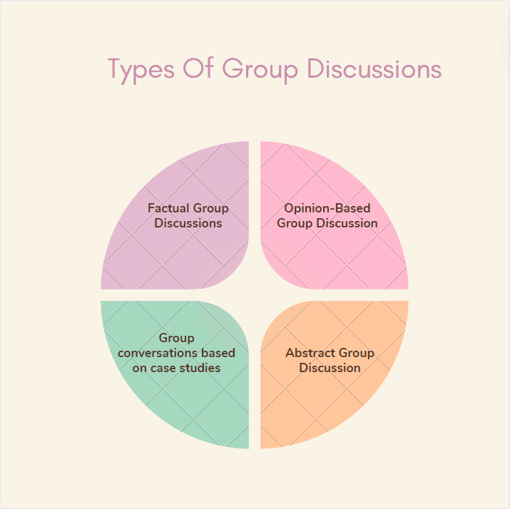

1. The length of the bridge, which a train 130 meters long and travelling at 45 km/hr can cross in 30 seconds, is:
A. 200 m
B. 225 m
C. 245 m
D. 250 m
2. A train running at the speed of 60 km/hr crosses a pole in 9 seconds. What is the length of the train?
A. 120 metres
B. 180 metres
C. 324 metres
D. 150 metres
3. A train 125 m long passes a man, running at 5 km/hr in the same direction in which the train is going, in 10 seconds. The speed of the train is:
A. 45 km/hr
B. 50 km/hr
C. 54 km/hr
D. 55 km/hr
4. The length of the bridge, which a train 130 meters long and travelling at 45 km/hr can cross in 30 seconds, is:
A. 200 m
B. 225 m
C. 245 m
D. 250 m
5. Two trains running in opposite directions cross a man standing on the platform in 27 seconds and 17 seconds respectively and they cross each other in 23 seconds. The ratio of their speeds is:
A. 1 : 3
B. 3 : 2
C. 3 : 4
D. None of these
6. A train passes a station platform in 36 seconds and a man standing on the platform in 20 seconds. If the speed of the train is 54 km/hr, what is the length of the platform?
A. 120 m
B. 240 m
C. 300 m
D. None of these
7. A 300 meter long train crosses a platform in 39 seconds while it crosses a signal pole in 18 seconds. What is the length of the platform?
A. 150 m
B. 200 m
C. 350 m
D. 400 m
8. A train passes a station platform in 36 seconds and a man standing on the platform in 20 seconds. If the speed of the train is 54 km/hr, what is the length of the platform?
A. 180 m
B. 200 m
C. 240 m
D. 320 m
9. The length of a train and that of a platform are equal. If with a speed of 90 k/hr, the train crosses the platform in one minute, then the length of the train (in meters) is:
A. 850
B. 525
C. 550
D. 750
10. A train 110 meters long is running with a speed of 60 kmph. In what time will it pass a man who is running at 6 kmph in the direction opposite to that in which the train is going?
A. 4
B. 6
C. 5
D. 9
11. A train speeds past a pole in 15 seconds and a platform 100 m long in 25 seconds. Its length is:
A. 100 m
B. 125 m
C. 130 m
D. 150 m
12. A train crosses a platform of 120 m in 15 sec, same train crosses another platform of length 180 m in 18 sec. then find the length of the train?
A. 175 m
B. 180 m
C. 185 m
D. 170 m
13. A train crosses a platform of 150 m in 15 sec, same train crosses another platform of length 250 m in 20 sec. then find the length of the train?
A. 150 m
B. 165 m
C. 155 m
D. 160 m
14. A train 400 m long can cross an electric pole in 20 sec and then find the speed of the train?
A. 65 Kmph
B. 70 Kmph
C. 72 Kmph
D. 75 Kmph
15. The two trains of lengths 400 m, 600 m respectively, running at same directions. The faster train can cross the slower train in 180 sec, the speed of the slower train is 48 km. then find the speed of the faster train?
A. 58 Kmph
B. 68 Kmph
C. 78 Kmph
D. 55 Kmph
16. A 1200 m long train crosses a tree in 120 sec, how much time will I take to pass a platform 700 m long?
A. 180 sec
B. 190 sec
C. 170 sec
D. 175 sec
17. A train is 360 meter long is running at a speed of 45 km/hour. In what time will it pass a bridge of 140 meter length?
A. 20 sec
B. 30 sec
C. 40 sec
D. 50 sec
18. A train running at the speed of 60 km/hr crosses a pole in 9 seconds. Find the length of the train.
A. 150 m
B. 145 m
C. 140 m
D. 135 m
19. How many seconds will a 500 meter long train take to cross a man walking with a speed of 3 km/hr in the direction of the moving train if the speed of the train is 63 km/hr?
A. 25 sec
B. 28 sec
C. 30 sec
D. 35 sec
20. Two stations A and B are 110 km apart on a straight line. One train starts from A at 7 a.m. and travels towards B at 20 kmph. Another train starts from B at 8 a.m. and travels towards A at a speed of 25 kmph. At what time will they meet?
A. 9 a.m.
B. 10 a.m.
C. 10.30 a.m.
D. 11 a.m
21. In what time will a train 100 m long cross an electric pole, it its speed be 144 km/hr?
A. 2.5 sec
B. 4.25 sec
C. 5 sec
D. 12.5 sec
22. A train 280 m long, running with a speed of 63 km/hr will pass a tree in?
A. 15 sec
B. 16 sec
C. 18 sec
D. 20 sec
23. How long does a train 110 m long running at the speed of 72 km/hr takes to cross a bridge 132 m length?
A. 9.8 sec
B. 12.1 sec
C. 12.42 sec
D. 14.3 sec
24. A train 360 m long is running at a speed of 45 km/hr. In what time will it pass a bridge 140 m long?
A. 40 sec
B. 42 sec
C. 45 sec
D. 48 sec
25. A train running at the speed of 60 km/hr crosses a pole in 9 sec. What is the length of the train?
A. 120 m
B. 180 m
C. 324 m
D. Cannot be determined
E. None of these
26. A train covers a distance of 12 km in 10 min. If it takes 6 sec to pass a telegraph post, then the length of the train is?
A. 90 m
B. 100 m
C. 120 m
D. 140 m
27. A train 240 m long passed a pole in 24 sec. How long will it take to pass a platform 650 m long?
A. 65 sec
B. 89 sec
C. 100 sec
D. 150 sec
28. The length of the bridge, which a train 130 m long and traveling at 45 km/hr can cross in 30 sec is?
A. 200 m
B. 225 m
C. 245 m
D. 250 m
29. A train 800 m long is running at a speed of 78 km/hr. If it crosses a tunnel in 1 min, then the length of the tunnel is?
A. 130 m
B. 360 m
C. 500 m
D. 540 m
30. A goods train runs at the speed of 72 km/hr and crosses a 250 m long platform in 26 sec. What is the length of the goods train?
A. 230 m
B. 240 m
C. 260 m
D. 270 m
31. A train passes a station platform in 36 sec and a man standing on the platform in 20 sec. If the
speed of the train is 54 km/hr. What is the length of the platform?
A. 120 m
B. 240 m
C. 300 m
D. None of these
32. A 300 m long train crosses a platform in 39 sec while it crosses a signal pole in 18 sec. What is the
length of the platform?
A. 320 m
B. 350 m
C. 650 m
D. None of these
33. A train speeds past a pole in 15 sec and a platform 100 m long in 25 sec, its length is?
A. 50 m
B. 150 m
C. 200 m
D. None of these
34. A train moves fast a telegraph post and a bridge 264 m long in 8 sec and 20 sec respectively.
What is the speed of the train?
A. 69.5 km/hr
B. 70 km/hr
C. 79 km/hr
D. 79.2 km/hr
35. How many seconds will a 500 m long train take to cross a man walking with a speed of 3 km/hr in
the direction of the moving train if the speed of the train is 63 km/hr?
A. 25
B. 30
C. 40
D. 45
36. A man sitting in a train which is traveling at 50 kmph observes that a goods train, traveling in
opposite direction, takes 9 seconds to pass him. If the goods train is 280 m long, find its speed.?
A) 60
B) 62
C) 64
D) 65
37. man's speed with the current is 15 km/hr and the speed of the current is 2.5 km/hr. The man's
speed against the current is :
A) 9.5 km/hr
B) 10 km/hr
C) 10.5 km/hr
D) 11 km/hr
38. A train of length 110 meter is running at a speed of 60 kmph. In what time, it will pass a man who
is running at 6 kmph in the direction opposite to that in which the train is going?
A) 10
B) 8
C) 6
D) 4
39. Two trains are running in opposite directions in the same speed. The length of each train is 120
meter. If they cross each other in 12 seconds, the speed of each train (in km/hr) is
A) 42
B) 36
C) 28
D) 20
40. Two trains started at the same time, one from A to B and the other from B to A . If they arrived at
B and A respectively 4 hours and 9 hours after they passed each other the ratio of the speeds of the
two trains was
A) 2:1
B) 3:2
C) 4:3
D) 5:4
41. A train travelling at a speed of 75 mph enters a tunnel 312312miles long. The train is 1414mile
long. How long does it take for the train to pass through the tunnel from the moment the front
enters to the moment the rear emerges?
A) 2.5 min
B) 3 min
C) 3.2 min
D) 3.5 min
42. Two cogged wheels of which one has 32 cogs and other 54 cogs, work into each other. If the
latter turns 80 times in three quarters of a minute, how often does the other turn in 8 seconds?
A) 48
B) 24
C) 38
D) 36
43. Two stations P and Q are 110 km apart on a straight track. One train starts from P at 7 a.m. and
travels towards Q at 20 kmph. Another train starts from Q at 8 a.m. and travels towards P at a speed
of 25 kmph. At what time will they meet?
A) 10.30
B) 10
C) 8.45
D) 9.30
44. A train moves with a speed of 108 kmph. Its speed in metres per second is :
A) 10.8
B) 18
C) 30
D) 38.8
45. Two trains having equal lengths, take 10 seconds and 15 seconds respectively to cross a post. If
the length of each train is 120 meters, in what time (in seconds) will they cross each other when
traveling in opposite direction?
A) 10
B) 25
C) 12
D) 20
46. A train moves past a telegraph post and a bridge 264 m long in 8 seconds and 20 seconds
respectively. What is the speed of the train ?
A) 69.5 km/hr
B) 70 km/hr
C) 79 km/hr
D) 79.2 km/hr
47. A train speeds past a pole in 15 seconds and a platform 100 m long in 25 seconds. Its length is:
A) 50 m
B) 150 m
C) 200 m
D) data inadequate
48. Two trains 140 m and 160 m long run at the speed of 60 km/hr and 40 km/hr respectively in
opposite directions on parallel tracks. The time (in seconds) which they take to cross each other, is:
A) 9
B) 9.6
C) 10
D) 10.8
49. Two trains of equal length , running in opposite directions , pass a pole in 18 and 12 seconds. The
trains will cross each other in
A) 14.4 sec
B) 15.5 sec
C) 18.8 sec
D) 20.2 sec
50. A 270 metres long train running at the speed of 120 kmph crosses another train running in
opposite direction at the speed of 80 kmph in 9 seconds. What is the length of the other train ?
A) 230 m
B) 240 m
C) 260 m
D) 320 m
Technical interviews are common for employers recruiting for engineering, science, or software roles. Essentially it is an interview to assess your technical ability for the role, and the depth and breadth of your knowledge in your chosen field.
Technical interviews are also designed to assess your problem-solving skills, your communication skills, and your ability to think under pressure. The process that is used to solve a given challenge is of interest to employers, as it gives them a glimpse into how you would solve a real-world problem at work.
There are various formats for a technical interview that you may encounter. Your experience will vary depending on:
(1) The employer
(2) The type of position (full time, co-op/internship)
(3) The type of role (for example, software development, operations support, plant engineer, hardware design engineer)
Some types of interview formats you should be prepared for (you may experience some or all of these formats during your interview process for a particular role):
(1) Pre-interview online assessment: Some employers use an online test of basic knowledge or a coding exercise to narrow down a field of candidates. This may happen before or after an initial phone screen. Generally, it is a timed test that must be completed by a given date.
(2) Phone Interview: This may be a basic screen, with general background questions. There may also be a technical component of the interview. For coding positions, you may be asked to type answers into a shared Google Doc or collaborate on a shared editor like Coder Pad. Some companies may have multiple rounds of phone interviews. Make sure to clarify the format of the interview ahead of time.
(3) On-site Interview: The technical component may involve answering questions related to knowledge about a particular topic, process, or product. You may be asked to outline the solution to a problem on a whiteboard or to make a presentation to a team. For coding interviews, be prepared to write code on a whiteboard, on a company-provided computer, or engage in a pair programmer assignment. There may be multiple rounds of onsite interviews with different teams. Make sure to clarify the format and ask with whom you will be interviewing with ahead of time.
(1) Review major topics covered in your coursework related to the position you are applying for. Carefully review the job description and be prepared for questions relating to required skills.
(2) eResearch the company- understand the types of problems they solve, or what products/services they sell.
(3) Review our general resources on Interviewing. Be prepared for some Behavioral Interview Questions as part of the Technical Interview.
(4) Brainteaser Questions are “puzzle” type questions, where there is often not a clear right or wrong answer. Examples: “Why are manhole covers round?“, “How many golf balls will fit inside a double-decker bus?” These types of brainteaser questions have been phased out by many large employers as it is believed they do not provide insight into future performance. However, you should practice a strategy to answer these types of questions should they come up during an interview. Review some of the strategies in this article by Big Interview
(5) Be comfortable writing code or demonstrating a process/solution/design on a whiteboard. Take a look at this article on How to Use a Whiteboard during an Interview.
(6) Review a few technical projects that you have worked on in school or internships/co-ops and be prepared to discuss your role, contributions, a high level overview of the projects, any issues that arose and how you dealt with them.
(7) Be prepared and comfortable dealing with unfamiliar scenarios. The interviewer wants to know how you can apply your knowledge in a professional setting. They are interested in your understanding of the nature of the problem, your thought process in how you formulate solutions, and how well you communicate.
(8) Review past interview questions for the role/company on Glassdoor
(9) If a skill is listed in your resume, be prepared to answer questions on it, or be tested on it.
The type of question will vary depending on your field and the type of position that you are interviewing for. Some examples of questions are:
(1) What is your favorite mobile app, and do you have any suggestions for improving it?
(2) Explain how a hybrid vehicle operates.
Describe a difficult engineering problem you recently solved.
Can you give an example of when you acquired a technical skill, and converted it into a practical application?
(3) Describe Quicksort.
(4) Write some pseudo code to raise a number to a power.
How would you design a touch interface for a device?
How does the strength to weight ratio compare for aluminum vs. steel?
(4) Write a function that divides two numbers without using the divide “/”‘ operator
(5) How would you make a product more biodegradable?
(6) Describe your senior design project in 3 minutes or less.
(7) Explain the different types of losses that occur in a transformer.
(8) Describe the differences between symmetric and asymmetric encryption, and scenarios where one is more appropriate than the other.
(1) Think out loud and verbalize your thought process. Remember that you are being evaluated on this!
(2) Ask clarifying questions. Make sure that you understand the problem and have all of the information that you need. Some problems may be vague or ill-defined to assess your confidence in asking questions and gathering data.
(3) Offer multiple approaches to the problem.
(4) If using Google Docs during a phone interview, make sure that you document your notes/calculations. Even if you don’t arrive at a solution, the process you used will be documented.
(5) Listen to your interviewer and to their suggestions. If they think you are going in the wrong direction, they will often try to help. You can ask periodically if they have any questions or if you are on the right track.
(6) Don’t bluff. If you don’t know the answer, take a few minutes to think about it. Say that you have not encountered a similar scenario, but you are going to try to work through a process to solve the problem. Think out loud, ask for some direction.
(7) Focus on the process, rather than the answer. If you have no background in the topic; be honest. You can say something like, “I don’t have a background in “topic X”, but I would love to learn about it, and intend to do some research on it after this interview. May I demonstrate my problem-solving skills to you in a different way today?”
(8) Dress Code: For most interviews, business professional attire is expected. This is true for many engineering and technology firms. But there are exceptions, particularly in the startup/tech space, some west coast firms, and for some software focused roles. Please dress according to pre-interview guidelines provided by the company. If in doubt, ask the recruiter.
Interview Questions askedin HR Interviews is as Following :
1. Tell me about yourself.
One of the more traditional questions in this list, "Tell me about yourself" is nonetheless a helpful question for HR professionals to get a sense for how this conversation will go, and in which direction they should steer future questions.
Ultimately, you'll want to be prepared to describe past roles, how those roles demonstrate your strengths, and what you want in a company and role moving forward. Additionally, make sure to include why you believe this role is a good match for your talents.
2. Why are you interested in this position?
This question is a critical indicator as to whether you're interested in this company and role in particular, or whether you're simply applying to any role in the field. For instance, it's not a good sign if you say, "Well, I'm interested in social media, so this role seemed like a good fit." Instead, you want to mention specific qualifications of the role itself, and demonstrate how those qualifications align with your personal strengths. Additionally, it's important you mention how you can help drive results for the team.
3. Why are you leaving your current job?
This is an opportunity to outline positive benefits you hope to gain by transitioning into a new role. However, one of the biggest mistakes you can make when answering this question is focusing on negative aspects of your current employer, rather than discussing positive aspects of the new company.
An HR professional will mark it as a red flag if you talk poorly about your current employer or company. It illustrates someone who isn't very professional, has a negative attitude, and could bring toxic energy into their new work environment.
4. Can you describe a work or school instance in which you messed up?
This is an intentionally tricky question. It's meant to glean insight into whether you can learn from past mistakes. If you can't think of any past errors, it could be an indicator you aren't capable of accepting responsibility for your own mistakes. However, creating a long list of past mishaps could make you look unqualified for the role.
You'll want to answer this question succinctly, and point out an error that doesn't represent a lack of character. Consider one, well-intentioned error you've had in the past, mention it, and then talk about how you grew from that experience.
5. Tell me about a time when you experienced conflict with a co-worker and how you dealt with it.
The HR professional isn't interested in hearing about that time your co-worker said something snide about you in the kitchen, or when your manager overheard you gossiping about a client to a friend.
Instead, this question is asked to gain insight into how you handle professional conflict. At the office, conflict is bound to arise, particularly when you're working closely with many different people. It's critical you know how to handle conflict without pointing fingers. Your answer should primarily focus on the solution, and should show a level of empathy towards your colleagues, rather than focusing on the problem.
6. What do you know about our company?
This is a fantastic opportunity to impress the interviewer. Ultimately, this question aims to gauge your level of interest in the company. The more you've researched prior accomplishments, company values, and basic information regarding the product or service, the more you can demonstrate a genuine desire to work there.
7. How would you improve our current product or service?
An HR professional wants to know whether you're innovative, whether you’re a quick-thinker, and whether you'll bring new ideas to the role. There isn't necessarily a wrong answer, here — you just need to show some creativity, and planning in advance will help. Consider potential problems they might be experiencing with their product or service, and how your unique skillset can fill that void.
8. How would your current manager describe you?
It can be awkward to brag about yourself, so while this question may seem weird, it's really the HR professional's tactic for hearing how your current boss views you in a work environment. To feel less uncomfortable answering this question, thoughtfully consider your last performance review, and use direct quotes from your boss in your answer.
9. Where do you see yourself in five years?
This question allows the HR professional to understand your career aspirations — and gauge whether this company is the right place for you to grow. In many ways, this question works as a temperature check to ensure that this is a field you’d like to stay in for the foreseeable future.
10. What questions do you have for me?
When an HR professional asks you this question, you might be eager to end the call and say, "Nope, no questions." This would be a mistake. Having thoughtful, smart, strategic questions demonstrates your interest in the role, as well as your potential value as a future employee. They want to hire candidates who will ask questions and move the company forward, and this can't happen if you accept everything as-is.
At this stage, you should consider what your genuine concerns are regarding the role. You might ask the interviewer, "What are the company’s values? What characteristics do you look for in candidates in order to represent those values?" Or, perhaps you'll say, "What do you enjoy most about working at Company A?"
Ultimately, an interview isn't just about allowing an HR professional to form an opinion of you — it's also a chance for you to get a strong sense for whether you even want to work for the company. So use this last question to your advantage.
Technical interviews are common for employers recruiting for engineering, science, or software roles. Essentially it is an interview to assess your technical ability for the role, and the depth and breadth of your knowledge in your chosen field.
Technical interviews are also designed to assess your problem-solving skills, your communication skills, and your ability to think under pressure. The process that is used to solve a given challenge is of interest to employers, as it gives them a glimpse into how you would solve a real-world problem at work.
There are various formats for a technical interview that you may encounter. Your experience will vary depending on:
(1) The employer
(2) The type of position (full time, co-op/internship)
(3) The type of role (for example, software development, operations support, plant engineer, hardware design engineer)
Some types of interview formats you should be prepared for (you may experience some or all of these formats during your interview process for a particular role):
(1) Pre-interview online assessment: Some employers use an online test of basic knowledge or a coding exercise to narrow down a field of candidates. This may happen before or after an initial phone screen. Generally, it is a timed test that must be completed by a given date.
(2) Phone Interview: This may be a basic screen, with general background questions. There may also be a technical component of the interview. For coding positions, you may be asked to type answers into a shared Google Doc or collaborate on a shared editor like Coder Pad. Some companies may have multiple rounds of phone interviews. Make sure to clarify the format of the interview ahead of time.
(3) On-site Interview: The technical component may involve answering questions related to knowledge about a particular topic, process, or product. You may be asked to outline the solution to a problem on a whiteboard or to make a presentation to a team. For coding interviews, be prepared to write code on a whiteboard, on a company-provided computer, or engage in a pair programmer assignment. There may be multiple rounds of onsite interviews with different teams. Make sure to clarify the format and ask with whom you will be interviewing with ahead of time.
(1) Review major topics covered in your coursework related to the position you are applying for. Carefully review the job description and be prepared for questions relating to required skills.
(2) eResearch the company- understand the types of problems they solve, or what products/services they sell.
(3) Review our general resources on Interviewing. Be prepared for some Behavioral Interview Questions as part of the Technical Interview.
(4) Brainteaser Questions are “puzzle” type questions, where there is often not a clear right or wrong answer. Examples: “Why are manhole covers round?“, “How many golf balls will fit inside a double-decker bus?” These types of brainteaser questions have been phased out by many large employers as it is believed they do not provide insight into future performance. However, you should practice a strategy to answer these types of questions should they come up during an interview. Review some of the strategies in this article by Big Interview
(5) Be comfortable writing code or demonstrating a process/solution/design on a whiteboard. Take a look at this article on How to Use a Whiteboard during an Interview.
(6) Review a few technical projects that you have worked on in school or internships/co-ops and be prepared to discuss your role, contributions, a high level overview of the projects, any issues that arose and how you dealt with them.
(7) Be prepared and comfortable dealing with unfamiliar scenarios. The interviewer wants to know how you can apply your knowledge in a professional setting. They are interested in your understanding of the nature of the problem, your thought process in how you formulate solutions, and how well you communicate.
(8) Review past interview questions for the role/company on Glassdoor
(9) If a skill is listed in your resume, be prepared to answer questions on it, or be tested on it.
The type of question will vary depending on your field and the type of position that you are interviewing for. Some examples of questions are:
(1) What is your favorite mobile app, and do you have any suggestions for improving it?
(2) Explain how a hybrid vehicle operates.
Describe a difficult engineering problem you recently solved.
Can you give an example of when you acquired a technical skill, and converted it into a practical application?
(3) Describe Quicksort.
(4) Write some pseudo code to raise a number to a power.
How would you design a touch interface for a device?
How does the strength to weight ratio compare for aluminum vs. steel?
(4) Write a function that divides two numbers without using the divide “/”‘ operator
(5) How would you make a product more biodegradable?
(6) Describe your senior design project in 3 minutes or less.
(7) Explain the different types of losses that occur in a transformer.
(8) Describe the differences between symmetric and asymmetric encryption, and scenarios where one is more appropriate than the other.
(1) Think out loud and verbalize your thought process. Remember that you are being evaluated on this!
(2) Ask clarifying questions. Make sure that you understand the problem and have all of the information that you need. Some problems may be vague or ill-defined to assess your confidence in asking questions and gathering data.
(3) Offer multiple approaches to the problem.
(4) If using Google Docs during a phone interview, make sure that you document your notes/calculations. Even if you don’t arrive at a solution, the process you used will be documented.
(5) Listen to your interviewer and to their suggestions. If they think you are going in the wrong direction, they will often try to help. You can ask periodically if they have any questions or if you are on the right track.
(6) Don’t bluff. If you don’t know the answer, take a few minutes to think about it. Say that you have not encountered a similar scenario, but you are going to try to work through a process to solve the problem. Think out loud, ask for some direction.
(7) Focus on the process, rather than the answer. If you have no background in the topic; be honest. You can say something like, “I don’t have a background in “topic X”, but I would love to learn about it, and intend to do some research on it after this interview. May I demonstrate my problem-solving skills to you in a different way today?”
(8) Dress Code: For most interviews, business professional attire is expected. This is true for many engineering and technology firms. But there are exceptions, particularly in the startup/tech space, some west coast firms, and for some software focused roles. Please dress according to pre-interview guidelines provided by the company. If in doubt, ask the recruiter.
Group discussion is when a group of people comes together to discuss a certain topic. Many Recruiters use group discussion (GD) to test a candidate’s communication skills, leadership skills, test topic knowledge, etc. There are also two other types of GD that test the lateral thinking of a candidate. It is a short case study & Group exercise. Often the group discussion rounds are considered tough, but it is not tough if you follow certain steps.
The general discussion (GD) is a session in which the candidate’s abilities are evaluated, including leadership, communication, social and behavioural skills, courtesy, teamwork, listening skills, general awareness, self-assurance, and problem-solving abilities.
Usually, the Group Discussion comes after the entrance exam for a professional degree. Depending on the firms or organisations, the group discussion may be the first or the last step in the hiring process.
The location of the group conversation does not have to be at the table. Any seating arrangement is OK as long as everyone can see one another’s faces. It is not only a typical talk; it is also a discussion based on facts and knowledge.
What is Group Discussion?
A group discussion is a conversation among participants about a specific topic. The selection procedure employed by organisations and educational institutions frequently includes a group discussion. The candidates discuss the assigned subject to present information, viewpoints, and conclusions. Employers employ this method to examine applicants’ soft talents and screen them.
What Are The Types Of Group Discussions?
Types of Group discussions are:
(1) Factual Group Discussions
(2) Opinion-Based Group Discussion
(3) Group conversations based on case studies
(4) Abstract Group Discussion

Factual group discussions: These discussions focus on the real world and test a candidate’s ability to digest information and analyse socioeconomic or everyday concerns.
Opinion-Based Group Discussion: Test how well candidates can articulate their beliefs and viewpoints. These group talks tend to focus more on views than facts.
Group conversations based on case studies: These discussions mimic real-world circumstances. The group is given the specifics of a fictitious scenario by the panellists, and then the group must work together to address it.
Abstract Group Discussion: These are abstract group discussions. In these, the interviewers check to see if a candidate can approach the subject at hand with originality and lateral thinking.